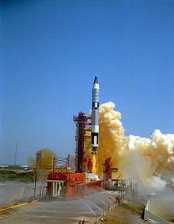

Commander: James McDivitt
Duration: 4 days
Year: 1965
Gemini 4 would be the first multi-day space flight by the United States, designed to show that it was possible for humans to remain in space for extended lengths of time. The four-day, 66-orbit flight would approach but not break the five-day record set by the Soviet Vostok 5 in June 1963. Subsequent Gemini flights would be longer, to prove endurance exceeding the time required to fly to the Moon and back. A second objective was the first American extra-vehicular activity (EVA), known popularly as a "space walk". The first space walk had already been performed by Soviet Alexei Leonov on Voskhod 2 in March 1965. NASA moved up the spacewalk from the original schedule, to demonstrate that the US was gaining on the early lead taken by the Soviets in what was known as the Space Race. As late as 11 days before the scheduled June 3 launch, newspapers were reporting that NASA was saying it "had not yet determined whether White would be the first American astronaut to expose himself to the elements of space," and that "A decision might not be made until a day or two before launching." A third objective was for Gemini 4 to attempt the first space rendezvous, flMying in formation with the spent second stage of its Titan II launch vehicle.